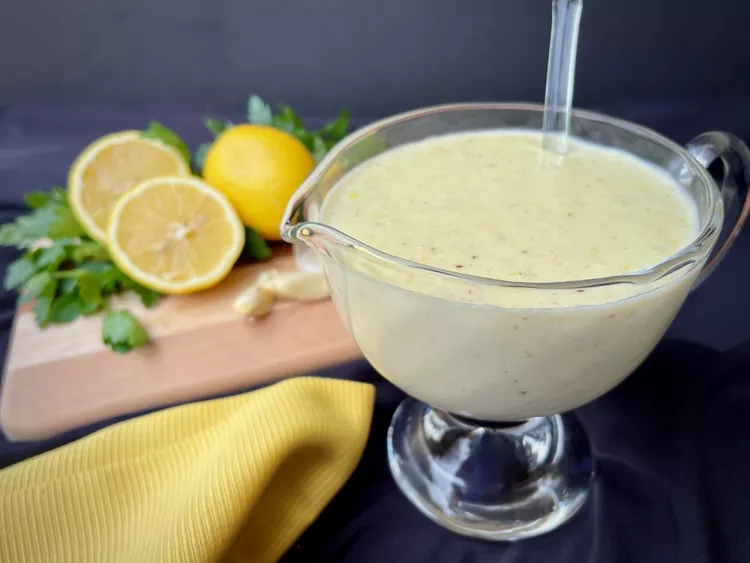

Lemon Alfredo Sauce

This lovely sauce is brightened by the addition of lemon zest and juice. It's perfect for pasta, but try it over steamed broccoli, or asparagus, for a delightful boost to your side vegetable. This recipe will accompany about a pound of pasta, or 6 to 8 servings of vegetables.
This lovely sauce is brightened by the addition of lemon zest and juice. It's perfect for pasta, but try it over steamed broccoli, or asparagus, for a delightful boost to your side vegetable. This recipe will accompany about a pound of pasta, or 6 to 8 servings of vegetables.
Ingredients :
- 1 cup heavy cream
- 1 medium lemon, zested and juiced
- ⅓ cup grated Pecorino Romano cheese
- chopped fresh parsley for garnish (optional)
Steps
- Melt butter in a 10-inch skillet over medium heat. Once butter is foamy, add garlic, pepper, salt, and nutmeg. Cook and stir until garlic is fragrant, about 30 seconds.
- Gradually whisk in cream, stirring constantly, to incorporate cream into butter. Drizzle in lemon juice, then add lemon zest, while stirring constantly. Keep stirring until sauce coats the back of a spoon, 3 to 5 minutes.
- Remove from heat and stir in grated Pecorino Romano and Parmesan cheeses. Taste and adjust seasoning, if necessary. Serve garnished with parsley.